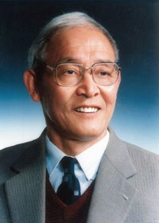

庆承松学长访谈录【受访人】庆承松【简 介】庆承松，1979年考入南京大学地球科学系，岩石矿床地球化学专业读本科，1983年考入合肥工业大学资源与环境工程学院，攻读矿床学专业硕士研究生。1986年毕业后留校任教，曾担任环境工程教研室主任。1992年7月担任学校党委组织部副部长。1995年8月担任学校党委组织部部长。1998年初任学校党委副书记。2006年5月起任合肥工业大学党委副书记、副校长。【采访人】地球科学与工程学院地质学专业10级本科生 李瀛在这次地科院系九十周年庆典之际我们小组有幸与现任合肥工业大学的副书记、副校长庆承松学长进行面对面交流。学长的亲切热情和爽朗的笑容让原本略感紧张的我们很快轻松自如起来，接下来的交流谈话更是脱离拘束，从而获益匪浅。以下是我们的采访记录： Q：您现在的研究方向主要是哪方面的呢？ A：我现在主要研究地化方向。 Q：您当时所学的专业是当时的兴趣吗？还是自己也不清楚？ A：其实，当时是受人家的影响，听到有些的人说地质好，于是就报了，也有一定的机缘在里头吧。在我的学习中，我一直没有出现过反感地质学习的现象，我觉得这是很好的。 Q：对，可是现在有些学生出现了一些偏科的现象，您怎么看待呢？有没有什么意见呢？ A：现在你们还是大一，还有挺多时间参与课外活动，但是我觉得既然在不能改变自己的专业的前提下，还不如好好地学呢。当时我的同学也有那种不喜欢学地质的，有些人即使不喜欢也坚持下来了，而后才有了更多的选择；也有些同学是不喜欢地质也没有好好学地质的，这样的话后面会不太好。也就是说，现在学好自己的专业才能有更好更多的选择，而现在不学好自己的专业，则连选择的余地都没有了。所以我建议那些同学真的需要好好认真地在专业上下功夫，这样以后的出路才会好啊。即使不喜欢，也可以试着培养自己的兴趣，来慢慢地发展。只要认真做就一定可以做好的。 Q：感谢庆学长啊！现在大学生都喜欢出国，您对此有什么看法呢？你觉得这样的现象好还是不好？ A： 当然， 现在出去的人是越来越多了，就我自己的同学就有三分之一的在国外。这样的现象呢不好说是好还是不好。能够出国学习的话必然是一份好的经历，因为这对自己以后的发展都是有好处的，并且可以和国外的大学相比来转换一种学习方式，使自己适应，从而更好地提高自己啊。 Q：您出国学习过吗？ A：我虽然去过美国、澳大利亚等地，但是都是短期出差，办公事，其实现在挺希望当时能够有一次出国学习的机会的，我觉得这样的经历应该是很独特的。 Q：那您觉得交换生这样的活动好吗？ A：那要看你到哪些地方去交换了。有些大学可能并不适合你，这时候便可以选择不去；而有些机会能给我们提供更多的平台，这样是非常好的，应该支持。并且南大的学生在哪里都是比较受欢迎的。 Q：感谢庆学长啊！我们一定会好好努力的。现在南大也在奋力打造世界一流大学，您认为南大的差距在哪里呢？ A：哈哈，这个问题的话……当然，我们必须承认我们面对世界一流大学一直存在差异。但是差距在不断缩小。差异是必然的，因为不同的社会文化背景；但是我们可以尽量缩小差距。 |
沙金庚学长访谈录【受访人】沙金庚【简 介】沙金庚，博士，德国洪堡奖学金、日本学术振兴会邀请学者基金（长期）、新西兰教育基金和加拿大自然科学和工程技术基金等的获得或资助者。1977年毕业于南京大学地质系。1989年获中、英联合培养的理学博士学位。现为中国科学院南京地质古生物研究所研究员和所长、中国古生物学会理事长、国际地球科学计划IGCP 506项目（海相与非海相侏罗系：全球对比和重大地质事件）的首席科学家。主要研究方向为：中生代的双壳类古生物学、地层学和古地理学，侏罗纪和白垩纪的湖泊系统（包括生态系统），青藏高原的地质演化。【采访人】地球科学与工程学院地质学地质学专业08级本科生 杨泽黎我们很荣幸采访到了从事中生代软体动物门双壳纲的古生物学、地层学、古地理学、湖泊系统和青藏高原的地质演化研究的沙金庚学长，他随口就将各地质年代的生物及其主要特征给我们详细地讲述了一遍，这种对知识的掌握让我们倍感差距，在专业学者面前我们还是相当孤陋寡闻的，更坚定我们努力探索学习的信念。以下是我们的采访记录： Q：沙教授您好，我是08级地科基地的杨泽黎，想对您做个采访，不知道您有时间吗？ A：可以的，请坐。 Q：谢谢。您是研究古生物的， 而我的家乡云南就有一处非常著名的古生物遗迹——澄江化石群…… A：你是云南的？我记得我以前曾经到过云南一次，当时我是古生物所的所长，有一个当地高中生给我们写了一封信，说他本人对古生物非常有兴趣，也读了很多这方面的书，希望能通过我更进一步深造，后来我们对他进行了一些测试，发现他确实在这方面非常有天赋，可是他的高考成绩不太好，所以有很多人就反对破格录取他，但是我坚持要收下他，不过后来我们还是没录他，最后他到北京了，有一次我还见到他，他大概记不得我了，我还记得他，就和他聊了一会，非常可惜。 Q：那这实际上就是一个关于专才和通才的问题了，现在很多大学都在推行通识教育，培养通才，另一方面很多企业又希望能找到专业娴熟的人才，不知道您对这个问题的看法是什么？ A：我觉得大学生首先要学习各种各样的知识，比如就我们地学研究而言，实际上是需要各个学科的知识的，你看我们研究油气需要地球化学，就是化学类的知识，搞矿床也需要古生物知识，因为测定年代除了同位素就是古生物年代，还有就是各个大陆上的古生物证据证明板块漂移，不仅仅地学交叉别的学科，别的学科也会交叉地学，比如说天文学里面就根据珊瑚推测出地球自转越来越慢，还有就是通过古生物推测以前的气候，这些都是需要各种知识的。但是在确定自己研究方向之后就要多学习一些这个方向的知识，因为以后要用。 Q：那就是说大学本科阶段学习各种知识，到了研究生阶段就开始重点放在专业上？ A：对，差不多，多学一些，说不定这些知识以后可以用上。 Q：刚才您谈到因为各种学科彼此交叉，所以我们需要学习各种知识，那学科交叉对地学有什么影响呢？ A：学科交叉是现在发展方向，各个学科交叉很大地拓宽了我们的研究范围，而且也带来很多新的研究方法，学科交叉最重要的是让我们有了新的思想，新的思路，一个问题换一个思考方向就会解决，所以才要你们多学各种知识。 Q：我听说古生物学里受学科交叉影响比较大的微体古生物和分子古生物方向是很热门的方向，应该就是这种趋势的反应吧？ A：对，微体古生物很多时候都是揭示古气候的变化，分子古生物学要研究烃类，指示物，需要化学的知识，以后这些方面都会有很大发展前景。 Q：说到古生物研究前沿，我听说中国的古生物研究在世界是处于领先地位的，具体情况如何呢？ A：这个也不能这么说，我们国家因为国土面积广大，地质形态多样，所以有各种各样的化石埋藏，我们的研究者就有很多研究样本可以发表，但是在理论研究方面还是落后于国外的，我们的学者更多的是做一些发现描述的工作，和国外的研究还有差距。我们有很好的研究资源，应该对国外奋起直追，也希望你们能参与进来。 Q：优秀的资源比如澄江寒武纪化石群这些？ A：对，这里我们对很多生物进行了描述，但是探讨内在关系的工作还有很多没做。 Q：这里有块我偶然找到的化石，您能给看看吗？ A：你这个是新生代的某个脊椎动物化石，新生代就是最近的一个地质时代，中生代后面，太小了，不好确定物种，不过不会太老。 Q：我很好奇一个问题，古生物研究需要化石作为基础，但是化石都是埋藏在地下的，我们的学者是怎样确定到哪里寻找哪些化石的？ A：我们很大一部分化石是通过民间的渠道找到的，老百姓知道哪里有化石出来，另外的就是我们自己踏勘来的，我们踏勘首先排除掉火成岩地区，因为是从岩浆演变的，没有化石，变质岩也一般不看，里面化石很少，而且破碎，主要就是沉积岩地区。然后沉积岩地区，不同的岩性化石也不一样，像石灰岩化石就比较多，砾岩里面化石就比较少而且碎。又通过查阅前人的资料可以知道某些区域的年代，地层情况，已经找到什么化石，然后我们就可以大概确定哪些地方可能有哪些化石。 Q：那这就牵涉到古生物研究模式的问题，一般我们是先发现化石再开展与化石相关的研究活动呢，还是先有个研究方向然后去寻找相关化石？ A：就是先有化石还是先有研究是吧？根据情况不同两种情况都会有，像我们在南京地区对周边地质资料都是很了解的，从幕府山到湖山地质剖面很全面，化石情况都知道，像这样我们就根据课题在相关地区进行发掘研究；另外也会有些在野外找到一些意外的发现，然后开展研究，这种情况也会有。有些开创性的工作是先有化石再有成果，不过更多的时候是先有个目标再寻找证据。 Q：看样子研究古生物也需要常出野外。实际上对地学人来说出野外大概是必修课吧，那出野外对于您的生活有什么影响吗？辛苦吗？ A：出野外是常出的，以前比较辛苦，我记得当年我们还要自己背棉被的，不过现在好多了，交通工具很发达，住的也好。野外工作虽然有点辛苦，但是能开阔眼界，陶冶情怀，走遍山山水水，人的境界也会在不知不觉间提升，另外也锻炼身体，搞地质的人很多身体都好，有的老前辈活到103岁，这是个很大的好处。 Q：出野外是对地学人一个基本的要求，顺便问一下，您觉得地科人需要具备哪些素质呢？ A：我刚才说的那些，一方面就是知识，要接触各方面的知识，也要有自己研究方面的，另外就是要吃苦耐劳。 Q：选择地科当初是您的梦想吗？ A：当初在工程队看见别人背着包到处跑，感觉挺有意思的，然后当时南京大学最好的专业就是数学和地质，所以就选了这个。不过后来开始研究古生物其实也不太清楚发展方向，只是坚持下来，当时我们学习压力很大，有四十门课，学起来挺累的，但是后来都有用的。 Q：那当时您们班上有多少个女生呢？ A：五个，班上总共有20个人。当时女生很受照顾，我们出野外搭帐篷都是把女生围在这中间的。 Q：那女生从事地学工作有什么优势和劣势呢？ A：女生就是心细认真，出野外有些时候比男生还能跑，成绩也是比较好的，但是毕竟出野外什么的会有些不方便，而且也有些其他限制。 Q：近几年国家对地学投入增加了很多，也实施了一些发展计划，国家对地学更加重视了，那国家对地学的关注和投入足够吗？国际上又如何呢？ A：国家对地学的重视是提高了的，因为要找矿，最近几年矿产不是不够嘛，国家开始投入，推动地学发展，探矿、石油、工程都需要地质学，以后你们的发展前景还是很广阔的。国家投入了很多了，相信以后还会更多，地学在国际上还是比较受重视的，各国都有不少投入，不过各国也不一定相同，总体来说我们国家比起来还有差距，但是估计以后会赶上来的，因为矿产需求一直都在增加。 |
宋爱琳夫人访谈录【受访人】宋爱琳【简 介】宋爱琳，南大地球科学与东城学院袁道先院士夫人，毕业于中国地质大学，现工作于桂林岩溶地质研究所。早年从事地质学勘探考察工作，有丰富的野外实习经历，专业方向水文地质，对于地下水运移和地下水污染进行观察与研究，与袁院士堪称地质届的伉俪先锋。【采访人】地球科学与工程学院地球化学专业10级本科生 马晓丹宋爱琳夫人作为家属陪伴袁道先院士回访母校，看见我们搬着椅子围坐过去，她非常亲切地同我们交谈了起来。夫人毕业于北京地质大学专攻水文专业，退休于桂林岩溶地质研究所。她说，岩溶就是喀斯特，她多年来工作的内容就是研究喀斯特独特而美丽的喀斯特地貌，为这种珍贵的地质现象做出最好的诠释。下面是我们的采访记录： Q：您对于您的专业有怎样的理解？ A：水文真的是地质领域很有前景的一个专业，研究水不仅是一件很有趣的事情，也是对于人类极其有益的一件事情。目前国内地下水的发展前景很好，主要朝地下水运移规律，地下水污染和寻找地下水几个方向发展。我鼓励你们多多学习水文知识，以后也欢迎你们去我们在桂林的研究所参观，在地质的水文领域施展你们的才华。 Q：您认为现在的大学生在大学里有哪些方面有些素质必须增强，对于学习地质的同学有没有什么特殊的要求呢？ A：人在大学里要学习的东西有很多，但最主要的还是文化知识，扎实的专业基础对于未来的就业是必不可少的，尤其是学习地质的同学们，应该懂得更多，以后在野外实习，走到一处就要看得出你脚下的石头是什么岩性，大约何时形成，通过测量数据和计算，可以知道这里的地质构造等。这是我们地质学者必备的素质，也是最重要的素质，但同时也是最不好练成的一项看家本领，它要求我们基础知识扎实，野外经验丰富，观察能力强，思维敏捷。另外，由于专业需要，学习地质的孩子要经常性的出野外实习，实际上，你会发现，你在短短的几个月实习时间内学到的知识可能比你看书上课学习一年学到的还要多的多，通过这个，我想说明的是野外实习对于地质学习至关重要的地位，既然如此，身体素质的重要性也就体现出来了，还在大学里的孩子千万不能放松了身体素质的锻炼，有了这两点的保证，再加强个性的修炼和道德的升华，就是一个优秀的大学生，一个合格的地质学者。 Q：您当初缘何选择了地质专业并从此与地质结下了不解之缘呢？ A：我当初选择要学习地质就是简单的感性认识到，学习地质可以游山玩水，走遍祖国大江南北，特别吸引我，所以就选择了地质，后来，我越来越喜欢地质，越学越觉得离不开，所以就把今生大部分的时间花在了野外考察和实习上，到了四十多岁，就嫁给了一个同样学习地质的丈夫，就这样，地质学习成为了我生命中必不可少的一部分。 Q：您经历过这么多次的野外实习，那么，您有没有什么特别美好的回忆，跟我们分享一下好吗？ A：呵呵··说起野外实习，我还记得有一次整个地质队只有两个女生，我们每个人都背着一个又大又沉的地质包，大家虽然辛苦，但非常团结。有一次我们一起爬一座大山，历尽辛苦之后，我终于爬了上去，当我站在高高的山顶，感觉一切都在我脚下的时候，我那时的开心和骄傲是无法形容的，我觉得这种感觉真的很美好。还有一次，地质队里只有我一个女同志，但是所有的男同志都很照顾我，帮助我，我觉得作为一个学习地质的女孩子，虽然要经历更多风雨和日晒，但在野外所获得的真诚的异性之间的友谊也是值得一生珍藏的。 Q：来到现代化的仙林，面对此时南大在您眼前的新形象，您有何感慨呢？ A：哎呀，现在的南京真的和50 年前我来过的时候大不一样了，现在你们的学习条件可真的是好啊，想我们大学的大部分时间都在野外度过，在大学里面，条件也远远不如你们，你们可得珍惜现在的条件，好好学习啊。 Q：从事地学，可以使你有机会走遍名川大山，这对您的人生观有何影响？ A：学习地质，经常出野外，与大自然接触的多了，人的心态就会特别平和，特别乐观，特别开心和知足，人生最重要的就是保持积极乐观的心态，就如同没有地质学家翻不过的大山，跨不过的河流，人生也没有迈不过去的坎。 Q：结合您的经历，谈谈您对学习地科的同学的建议和期许？ A：现在学生的学习生活中少了许多的实践，我觉得这并不有利于培养真正意义上的好学生，真正的好学生应该在三方面全面发展，室内学习，野外实践，实验室做实验。只有这样，才能把自己培养成真正的好学生。 |
王德滋学长访谈录【受访人】王德滋【简 介】王德滋，煤炭工程技术专家，我国煤炭科学技术研究事业的主要奠基人之一。1950年毕业于南京大学地质系。在煤矿采用新技术，大幅度提高产量。20世纪40年代在淮南矿区自行设计建设了年产90万吨的国内先进矿井。开创了我国现代煤炭科学技术研究事业，培养了一大批煤炭科研和工程技术人员。【采访人】地球科学与工程学院水文与水资源专业10级本科生 吉久霞王德滋院士非常和蔼可亲地跟同学们进行交流，询问同学们的姓名、年级以及所选专业，他详细地为同学们剖析地质学以及各专业的发展前景，真心地为新一代的地质人高兴。他感慨道：“看到你们这些年轻而充满活力的面孔，我又回想起了当年在中央大学的日子……”同学们看到王院士热情的笑脸，感受到了王院士对地质学深厚的感情。以下是我们的采访记录： Q：当年是什么动力让您选择了地质学？ A：我是主动选择地质学的。当时我觉得我们中国地大物博，非常需要地质方面的人才。我也非常愿意去探索，希望可以为中国在这方面的发展做出贡献。我还记得去年我来仙林做讲座的时候，有个女生问我地质学是不是很冷门，其实啊，地质学是一个非常热门非常有前景的学科。我们中国太需要这方面的人才了，不管是资源问题，环境问题还是如泥石流、地震这样的灾难，都需要地质方面的人才。我们南大的地学更是出色，我们是985中的第一批，是国内的一流大学，我们的学生一定是前途光明的。 Q：您还记得您第一次接触科研是什么时候吗？ A：大三的时候，老师出了一个题目“白云石的成因”，让我们自己去查资料解答这个问题。我非常喜欢主动学习，所以当时我的积极性非常高。我根据题目，去图书馆查资料，当时为了这个读了很多文献，中英文的都阅读了不少，最终写出了一篇不错的论文。那可以说是我第一次接触科研，接触科学文献，更激发了我对科研的兴趣。 Q：听说您这么多年来一直都在南大，从未离开，这是一种怎样的缘分呢？ A：其实我在留在南京大学任教之前，我的分配去向是到哈工大研究生班学习俄语，准备去读研究生。由于当时国家实行统一分配。我的行李都打好了，就等着到哈工大报到。如果到了哈工大，将来还有可能到前苏联学习。此时突然系里通知我，要我留在系里教书，可能是当时的系主任认为我的“业务”还算可以，就要下了我，留在系里当助教。当时我感到去哈工大也挺不错，不仅可以读研究生学习俄语，而且也有机会去前苏联留学，但是一纸批文让我留在了南京大学，开始了助教生活。 1946年，国立兰州大学创建地理系，当时一批国内知名学者在校长辛树帜的罗致之下，从全国各地来到兰州这个西北内陆城市执教。1952年全国院系调整后，兰州大学地理系正式设立自然地理学专业，并不断发展壮大，随后更名为地质地理系。为了支持兰大的工作，教育部特地发通知要南京大学派8位地质系教师去支持和加强兰州大学地质系建设。我作为教学骨干，成为了这8人中的一份子，我也做好了随时开拔的准备。但是具有戏剧性的是，突然教育部又发来一份通知，不让我们去兰州大学了。 原来，教育部要恢复北京大学地质系。原先的北大地质系与清华大学、北洋大学（现天津大学）、唐山铁道学院（现西南交通大学）等院校的地质系（科）合并组建成为了北京地质学院后，北大就没有地质系了。因此，重建北大地质系就提上了日程。教育部力图在北大地理系的基础上建设北大地质地理系，所以希望这8位南大骨干前往北大，但是，此时南京大学的领导层有了异议，他们认为支持西部没有问题，但是去北大不行。学校高层顶住压力，不肯让自己的骨干前往北京。此举在我看来，顶住不放，也是情有可原，既然是北大恢复建设，也应该是直接从北京地质学院抽调人马，而不应该是远隔千里从南大挖人。南大还是有些本位主义。由于南大讲得在理，最后还是教育部作了妥协，没有继续纠缠此事。8位骨干留在了南京。 Q：在我们南京大学地质学成立90周年之际，您有没有什么祝福的话语想说或者一些感慨？ A：我希望我们地学人要做到六个字：奉献 团结 进取；我最大的心愿就是：再花10年，再奋斗10年，把我们南京大学的地质学建设成为世界一流的地质学。不过，我最大的忧虑就是：后继无人！我们地质学目前缺少年轻的一代啊！ |
杨树锋学长访谈录【受访人】杨树锋【简 介】杨树峰，构造地质学教授，专攻于大地构造和岩石物理学。为浙江大学地球科学系地质与地球物理研究所所长和浙江大学研究生院常务副院长。出生于1947年5月，是中国自己培养的两位最早的地学博士之一，著有《地球科学概论》。【采访人】地球科学与工程学院地球化学专业10级本科生 卞霄鹏杨树锋学长是我国国内自己培养的第一位地质学博士，人却是相当平和与健谈的，在整个过程学长引领了热烈的气氛，并且在讲的过程中他多次提到了幸福感这个问题，可见杨学长是一个知足满足快乐幸福的人，与他交谈时一件相当让人沉醉其中的事情，以至于最后我们甚至都还意犹未尽。以下是我们的采访记录： Q：关于选择地质学？ A：当时也无所谓选择，领导给安排了什么专业就去学，所以谈不上选择。 Q：您曾经在地质考察队工作过，是不是觉得地质工作很辛苦？ A：我一直觉得要幸福地生活，快乐地工作。其实辛苦点并没什么，但重要的是要有幸福感。我觉得幸福来自于成就感。你能在自己的工作中获得成就感那是十分重要的。 Q：您从事科研工作最觉得受挫的是什么时候？ A：应该是科研的中期吧，曾经有一段时间，搞了几年研究都不能出成果，那时候真的觉得很苦闷。当时甚至很羡慕那些在学校扫地的人，因为他们扫完地地就干净了。他们的工作能看到成果，觉得他们能从工作中获得成就感。还有就是记得当时刚毕业不久开始从事科研工作，开始发表论文的时候觉得特别激动，但现在有时回头看看当时写的论文其实也并不是什么特别重要的成果。 Q：您如何看待竞争？ A：我觉得竞争不能为了个人的名利，比如说我发现了一个现象，然后你研究了，很快发了文章，我不会觉得你这人怎么这样，窃取我的成果。我觉得科学是造福大众的，如果说我发现了一个现象，又没有时间或者没有能力去研究它，那你去研究并且很快发了文章，那我觉得很好，早一天解决总比迟一天解决要好。早一天解决就能早点造福大众。要是以后有人写书，把我做为先驱者写进去，那就够了，要是不写我，也没有关系。所以我觉得竞争应该是大家对一个问题争先恐后地去研究，而不是为了自己的一点利益去争。 Q：地学如何为人们生活做贡献？ A：地学可以做的太多了，比如说资源，能源和环境。我们发现资源，利用资源，解决能源与环境问题。其实地学是一个集探索性与应用性于一体的学科。与理科相比，它的研究成果一般立刻就能指导生产。与工科相比，它有不想工科那样过分注重应用性而忽视理论研究，比如说以前你用这个找油理论能找到油，现在你用这个理论可能就找不到油，所以需要不断去探索。所以这个学科很有意思。 Q：您在大学时是有明确的目标还是走一步看一步？ A：总的方向还是有的，我一直喜欢这么一句话，有志之人难立志，无志之人常立志。没有志向的人今天想做这个，明天又想做那个，所以叫常立志。而一个有志向的人他对自己的志向常常比较慎重，所以叫难立志，但一旦确定下来，就很难改变。当然你也不能说我是有志之人，就一直不立志。结果时间白白过去了，这也不可取。 在交谈的过程中，谈起南大以前的校训“嚼得菜根，做得大事”，杨学长颇有感慨，认为“做得草根，干得大事”，就是心中要有群众，并且还能干出一番事业。 另外他还与我们分享了他的两句话，“我离开大家，将无法生存；大家离开了我，照样生存。”他坚持这个社会给予他的太多，而他能回报这个社会的太少。学长就一直保持这种谦虚的态度来对待生活，对待工作，对待科研。 |
|  |
袁道先学长访谈感想【受访人】袁道先【简 介】袁道先，诸暨人，岩溶地质学家, 著名水文地质学专家，中国科学院院士，西南大学博士生导师，享受国务院颁发的政府特殊津贴。1933年8月出生，1952年毕业于南京矿专。中国地质科学院岩溶地质研究所研究员。1991年当选为中国科学院院士。中国地质大学、华中科技大学、桂林工学院兼职教授。2008年，联合国教科文组织将，世界岩溶中心依托于中国地质科学院岩溶地质研究所，正式挂牌落户在桂林。【采访人】地球科学与工程学院水文与水资源专业10级本科生 蒋亚梅收到通知，三点钟就要前往接待地点等候，本以为构地课只有翘课了，不过当我们把情况向构地课老师说明后，他十分大方地免了我们一节课。所以，这向专业课老师要来的几小时，可不能白白浪费了。 图书馆的西北一角，仿佛因为我们这一百多名学子的焦急等待而变得热闹起来）。交流着采访的问题，交流着徽章，交流着见面时候的寒暄，交流着放在桌上满满的点心。呵呵，等待的时间还真是漫长，我们有点迫不及待了。等待时便和旁边的同学调侃着相互佩戴上手中火红的“荣誉学长”徽章，心里莫名地骄傲起来，也许多少年后，我们也会在“学弟学妹”的簇拥下戴上这个呢，我们的“学长”们，应该也会因我们的热情而感动吧。 我们列队等待的阵势，就像众人翘首盼望钱塘江大潮一般，以为近了、近了、却还是没有来。终于，远处黑压压的队伍靠近了，我们兴奋地迎上了前去…… 走在前排的一定就是我们最长一辈的“学长”了，已然鹤发童颜的他们让人觉得万分慈祥—— “学长，欢迎您到仙林来！我给您带上这个吧——” “这是什么呀？” “您看看——” “哦，荣誉学长，呵呵，光荣啊我们……” 非常幸运，今天我是为袁道先院士佩戴的徽章，轻松的氛围，简单的寒暄，我们把院士引入了茶话厅。从桂林赶来的他丝毫没有感觉疲倦，跟我们轻松愉快地聊了起来。 也许别人眼中的袁院士都是头戴无数荣誉光环的知名地学专家，但是今天，坐在我们面前的他就只有一个身份，那就是我们最可亲可敬的“学长”。坐在他的身边，我最想问的不是什么学术，而是他在南大生活学习的五十年代。那时候中国的地质学刚刚蒙芽，但是南大却汇集了一批像袁院士一样的有志青年，他们的青春在这里汲取了知识的养分，于走向社会的那一刻，他们发芽了，然后不断生长，直到有了今天的贡献和成就。袁院士告诉我们，当时的南大地学设有三个专业，而他选择的是探矿。不多久，几个学水文的大二学长也来到这边，询问着和水文有关的专业知识。我这才了解到，袁院士毕业后从事的水文方面的研究，一方面是顺应需要，一方面也是自己的选择。 袁学长年近八旬依然活跃在地学工作的第一线，令人叹服。从他们那里，我们重新认识了现在；从他们那里，我们看到了自己的未来…… |
戴金星学长访谈感想【受访人】戴金星【简 介】戴金星，石油天然气地质学和地球化学专家，中国科学院院士。1935年3月19日生于浙江省瑞安县白门乡霞川村。1961年毕业于南京大学地质系。主要致力于石油天然气地质学和地球化学研究。提出“煤系是良好的工业性烃源岩”理论，开拓了我国煤成气开发研究工作。提出了煤成烃模式、各类天然气藏鉴别方法、天然气藏模式及大中型气田富集规律。主持研究的“中国煤成气的开发研究”项目获国家科技进步一等奖；“大中型天然气田的形成条件分布规律和勘探技术”获国家科技进步一等奖。【采访人】地球科学与工程学院地质学专业08级本科生 费冰2011年5月17日，南京大学地质学科成立90周年的纪念日。大批优秀学子重返母校，参加地院举办的“传承之约”交流活动。 校友们刚踏进杜厦图书馆，一个个地科学子都迫不及待地探出身子，想抢先一睹他们的风采。热烈的掌声响起，学子们手拿“荣誉学长”的胸章，迎上前去，亲切而又激动地问候“学长，您好！”他们将火红的胸章别在学长们的胸前，整个会场一派神圣和温馨。 短短1分钟，每位学长周围都围绕了4、5名热情的由地科学子所组成的特约小记者。他们迫切地想把心中早已经准备的问题抛给他们的偶像，当然，我也是如此，今天可是有的放矢，心中早就有了目标。没有在第一时间跟上他老人家已经让我懊悔万分了。我四下张望，极力在近200号人中捕捉到这为中国争“气”第一人矍铄的身影。左尽头，右尽头，隔间，大厅，站着的，坐着的……还是没有。我不由得失望了，兴许是因为他老人家75岁的高龄经受不住旅途劳顿，因而没有前来。 我又一次扫视会场，一位清朗的老人被一群学子围绕着，就坐在靠近会场入口的座位上。左额头上标志性的一颗痣让我内心狂喜。戴金星院士！我终于找到了传说中的中国天然气之父！我静静地半蹲在先生的身边，抑制不住激动的心情。他清瘦不失风骨，甚是慈祥。此时他正在给他的小学弟们讲述他当年求学的经历，今日图书馆的现代化让他老人家如孩童般露出了惊羡的神情，不时提点我们要珍惜好的学习条件。 他的话语中断，我立马插话，过于紧张的我连话都说不利索。刚说出“戴老师，听说当时为去栖霞山考察，您卖了掉您……”戴老就笑得低下了头。原来是真的，在那个物资匮乏的年代，为了筹得去栖霞山考察的费用，他卖掉了三姐寄给他的布鞋和土布衣服。当我们这些晚辈敬称他为中国天然气之父时，他谦虚地说还有很多地方需要进一步研究，同时告诫我们不能自满，要在地科院“宽基础、厚口径”的培养模式下，拓宽自己的知识面，积累各方面的知识，这样才能在以后的学习与工作中“举一反三，举一反三”。戴老连用了两个”举一反三”，这是他作为前辈的切身体会啊！我们周围一圈学子个个若有所思，对现在的课程模式有了更加深层的理解。另外戴老还特别提醒我们要重视外语和计算机水平的提高，他认为这些是非常重要的工具，鼓励我们有机会去国外看看。 四十分钟的时间就像是凝成了一瞬，当熊书记过来提醒我们只有五分钟时，我们才忽然意识到我们还有很多问题！出于无奈，我们提议戴老给我们小辈留些寄语，好让我们承载着老一辈地质工作者的殷切期盼奋力向前。老先生欣然应允，写下了遒劲的六个大字——“勤作勤读勤创”。 |

|
郭华东学长访谈感想【受访人】郭华东【简 介】郭华东，1950年10月出生于江苏省。1977年毕业于京大学。1981年在中国科学院研究生院获硕士学位。1984年至1985年在美国俄勒冈州州立大学学习。2002年1月24日至25日，中央电视台《百家讲坛》栏目和中国科学院科普办举办了“科技在我身边”系列讲座第一期，7位在自然科学、技术科学、交叉科学等领域着有建树的专家、学者参加了讲座，中国科学院遥感应用研究所所长、中国科学院遥感信息科学开放研究实验室主任、研究员、博士生导师郭华东做了题为《给地球照相》的专题讲座。【采访人】地球科学与工程学院水文与水资源专业09级本科生 李筱宛地质系的荣誉学长们缓缓走近，学生们赶紧上前搀扶几位年长的学长。名为“传承之约”的学长交流会就这样其乐融融地开始了。 和那些满头银丝的老院士不同，郭华东老师只是鬓角多了几分霜华。他开心的时候会露齿大笑，思考时便眉头微锁，讲话时有条不紊，吐字清晰。虽然与科研打交道十几年，亲和力丝毫未减。 郭华东老师现任中国科学院对地观测与数字地球科学中心主任，从本科时期所学的矿床地质，到后来利用遥感找矿，最终进入数字地球领域，郭老师可以说是紧跟科学前沿步伐。每当谈到自己的研究领域，郭老师笑言：“在国内，我学的是矿床。在国外，别人都以为我是搞雷达的。”面对我们这些对遥感理论浅尝辄止的学生们，郭老师解释道，数字地球是一门很年轻的学科，而遥感，对海对地对空，都能发挥独特的作用。虽然现在地科的学生学着传统的地质学方法，但是接触科技前沿对知识的构建必然有利无害。 在了解了现在地科学生的学习现状后，郭老师给我们提了关于学科建设的想法。他认为我们地科院可以在三个方面有所延伸：首先，研究区域从本土延伸至全球；第二，从原本找水找油的研究延伸至灾害、气候变化等国际热点的研究；第三，从不同角度研究地球。这就好比在地面上看到的地球，与遥感所观察的地球，差别是很大的。 谈及地质，外人的想法不过是野外考察、看石头、找矿等等。我们好奇郭老师作为资深的地质学家，眼中的地球科学是什么样的。他说：地学是一个发散性的学科，拿写一篇优秀的地学论文来说，它至少需要一位优秀的物理学家、化学家以及地学家共同努力。并且地学领域相当广泛，可以说是天上地下无所不在。所以就要求我们每一位地学家有很高的知识修养，多学习数理化知识，多浏览地质学报以及一些优秀的论文，扩大自己的阅读面。也正因为地学的学科交叉性，对于大学生而言，在注重夯实基础的同时，要好好学习计算机和英语。现在是信息时代，很多科研工作都需要计算机进行，因而必须要学好计算机。再者中国属于发展中国家，我们的学科要更好的走向世界就必须学好英语，这样才能更好的与世界一流学者进行交流。对于谈到地学的发展前景，郭老师亦十分乐观：地球是深奥的，人类现在的努力对于庞大地球来说还是比较初级的，虽然已经有很多的研究，但是仍有很多问题需要解决。 对地学的现状我们表示担忧：现在地学在国内依然不是热门专业，我们当中又有很多调剂进来的学生。郭老师听了微笑着说：“有人确实会在学习中慢慢喜爱这门学科。我当年可是自己报的这个专业。”看到我们惊奇的神情，郭老师继续解释道：“因为我比较有探险的心理。”我们只是地学的初入门者，对往后的道路也甚是迷茫，不禁询问了郭老师学地学是否应该考研的问题。郭老师告诉我们：“追求不同，你所设计的人生也不同。如果你想从事科研，研究生是必须读的。现在经常讲的那句：‘面向世界科学前沿，面向国家科技需要。你们现在可能对这句话没什么感觉，我毕业时，中国还没有找到铁矿，我就一边工作，一边为了找矿继续学习。渐渐的，做科研对我来说不再枯燥，而是一种享受。”说到这里，郭老师满眼笑意：“有时候人会因为某些原因改变自己的方向，不过我挺固执的，对地球很感兴趣。”我们疑惑：“科研过程并不是一帆风顺的，老师又如何坚持的呢？”郭老师摆一摆手：“打个比方，我大学时很注重锻炼身体，很有运动细胞，是篮球队后卫，也擅长长跑，因为我有耐力。跑马拉松时，路上很累并且会觉得坚持不下去了，但你得咬住牙，只要过了这个坎，你就能够继续下去。之后虽然不是很轻松，但已经不会让你累到要放弃了。 |
李德生学长访谈感想【受访人】李德生【简 介】李德生，中国科学院院士，石油地质学家。江苏苏州人，生于上海。1945年毕业于重庆国立中央大学地质系。先后任大港油田、任丘油田地质研究所主任地质师，胜利油田地质所副所长，玉门油田地质师、总地质师。1991年当选中科院学部委员。现任中国石油天然气总公司石油勘探开发科学研究院总地质师，是美国石油地质学协会终身会员。【采访人】地球科学与工程学院地球化学专业10级本科生 向婉丽2011年5月17日，南京大学地质学科九十周年庆暨南京大学十二五战略发展研讨会完美落下帷幕。参加此次研讨会的四十多位业界名人一同参观了南京大学仙林校区的杜厦图书馆，并与等候在那里的南京大学地球科学与工程学院各年级同学进行了简短的交流。本组同学有幸与李德生院士交流了有关石油勘探方面的问题，获益匪浅。 在访谈中，我们了解到李德生院士当初会选择地质专业完全是源于他强烈的爱国心。在四五十年代，中国还处于十分贫困落后的状态。要使国家富强起来，必须发展工业。而工业势必离不开石油等能源供给，可是当时国内对这方面的研究不是很好。本着为祖国服务的理想追求，李德生院士毅然走上了这条道路。至今，他已献身石油勘探事业近七十年了。 这位慈祥的老人还给我们讲解了很多关于石油开采方面的知识。比如开采石油首先要了解的几项指标；石油的质量区别；石油开采一定量后继续开采所需要做的事；油井的后续利用；新能源的利用等等。美好的时光转瞬即逝，但李德生院士的科研精神与爱国之心深深打动了在场的地科学子。 |
聂文彪学长访谈感想【受访人】聂文彪【简 介】聂文彪，戴维尼（中国）有限公司（戴维尼珠宝网）CEO。作为中国网络钻石销售的领军者的聂文彪，创建的戴维尼珠宝网以“极速供应链”颠覆传统的珠宝销售模式（价格比市场下降30%-70%），让珠宝走向大众，影响与改变了人们网购习惯，曾荣膺“2007年中国经济十大创新人物”。【采访人】地球科学与工程学院水文水资源专业10级本科生 华健南大地科90周年庆典之际，我们团队有幸与戴维尼公司董事长聂文彪学长进行交流。作为2007中国经济十大创新人物之一，他丝毫没有骄气，肩上背着一个旅行包，脸上始终挂着亲切的笑容。很明显，学长延续着地科人的习惯，从后面的谈话中，我们知道了学长身体状况很好，坚持每天跑5公里，甚至还参加过马拉松比赛。他坚信健康的体魄是成功的首要条件。 简单的交流以后，我们谈起思维方式这个话题。他认为：人活一世，就是为了被认可，年轻时被他人认可，年老时被自己认可。对实业家来说，主流思维方式有两种，一种是灵活多变，能很快的适应社会。时代流行什么就做什么，紧跟时代潮流不落伍；另一种是认准一个方向，执着地追求，一点点积累，把产品做深，做行业的领头羊。他认为自己属于后者。而真正决定我们能走多远的是我们的心态，我们的选择，我们的坚持。 在大学，学术很重要，但是学长给了我们一个忠告：做人大于学术。他说这句话缘于一个同学的提问： “您当年为什么报考南大地科院？”他回答说当年都是国家分配的，南大的天文、地理比较强，他的分又高，就被分过来学习了。而对于部分同学对专业不满意的现状，他讲无论我们现在在学什么，我们最好能在大学时就形成自己的思维方式。专业不是最重要的，做人比知识重要多了。他还举例分析了现在社会礼仪问题。面试时一个人有礼貌，先鞠一躬，就会给主考官留下很好的印象，相比于其他求职者优势明显。所以求职的同学们有必要学会礼貌待人，这或许会给自己带来好运。从另一个层面也反映了细节决定成败。 他认为人都是有社会属性的，需要和现实社会很好的融合，很少有人能不被社会影响。有人提出一些个性独立的人，不在乎别人看法，追求心中的日月，虽与当下格格不入，但被后人怀念。问他对此有何看法，他并没有直接给出评论，不过从他的话里还是能感觉出他比较崇尚活在当下。 然后聊到微博，最近他刚建了个微博号，粉丝竟超百万。我问：很多大号背后都是一个团队再操作，您如何看待这种现象？他讲现在杂志的规模很有限，卖十多万不错了，一些晚报也不过卖几十万，也就是说百万的粉丝量是一个很大的传播媒介。现在互联网如此便捷，5分钟内世界各地发生的事我们立马就能知道，这就是它的便捷之处，将平面媒体向立体媒体转换。他也讲到，现在新闻这么多，很多都是无用的垃圾新闻，很多人和事也是被PS了，我们往往看不到事情的本质，真假需要我们自己去分辨。 我们顺着话题继续问：现在社会如此浮躁，很多年轻人对未来迷惘，面对纷繁复杂的选择，他们该如何做出决断。学长强调了六个字——“简单人做大事”。 最后我们问了个比较现实的问题，若我们年轻人想做实业，但资本不够，继续念书又会把大把时间消耗，该怎么办？他回答：磨刀不误砍柴工。效率的意义是事半功倍。我们恍然大悟，暗下决心用功念书，积累知识与技能，远离浮躁。 |
王心源学长访谈感想【受访人】王心源【简 介】王心源，1964年6月生，安徽省六安市人。1995.9—2000.9 南京大学地球科学系与中国科学院遥感应用研究所联合培养，构造地质专业，第四纪地质与遥感应用方向，获理学博士学位。2003.3—中国科学技术大学地球与空间科学系在站博士后。 中共党员，理学博士，教授，自然地理学科带头人，博士生导师。2003年被遴选为安徽省高校学科拔尖人才。受聘安徽师范大学学科建设关键岗位。中国科学院-教育部-国家文物局遥感考古联合实验室安徽遥感考古工作站站长，安徽师范大学教务处副处长。【采访人】地球科学与工程学院地质工程专业09级本科生 张军1、对其研究领域的一些介绍 王老师主要的研究方向为数字地球科学，通俗来说即遥感技术。他以遥感技术在水文方向的应用为例，深入浅出地介绍了学科之间的交叉和应用，并且强调了大学生对多种知识学习的重要性。 此外，王老师还以“水文”一词为例，向我们提了一个意想不到的问题：水文水文，何以谓之文。当然，他最后也没有给我们一个明确的答案，只是微笑地告诉我们，在生活中我们已习以为常的事物，往往存在着很大的智慧，要善于发现问题，提出问题，并且要能够抓住关键问题。 2、治学的态度及方法 地质学科具有其独有的特点，所以作为地质学科的学生要能够从“地、天、书”中汲取知识。天地载物，其重要性不言而喻。而对于书的学习，王老师强调，前人的智慧是存在且重要的，但在读书的过程中要注重继承与批判的双重兼顾，既要做到尊重前辈，也要善于思考，在前人的基础上发现问题，并志于解决问题。 3、对仙林新校区的感受和对大学生的一些建议 当被问及对仙林新校区的感受时，王老师笑言“仙林校区很符合南大的那八个大字嘛。”校区环山，建筑物色调及风格低调而大气，即所谓“诚朴雄伟”；而学校充分为学生考虑，使宿舍到教学楼、图书馆等地距离适宜，设施也充分满足学生们的需求，即为“力学敦行”提供了极其重要的环境。 4、如何做好科研工作 王老师提到自己的经历时说，90年代时板块构造理论极其流行，所以当年选择了地质学科的学习。本科毕业后，任教一段时间，发现自己的知识已经不能适应时代的需求，因而继续进行研究生学习。王老师说“可能你已经选择了一条路，准备走下去，但是往往会受到一些其他因素的影响，让你不得不走到另一条路上。想法不是最重要的，要加入你自己的思想，要学会自己采食物吃。 王老师还提到当代社会的竞争归根结底就是素质的竞争，素质又包括：专业知识、IQ、EQ、管理能力等方面，在大学生阶段要打好基础，比如说普地作为基础学科其重要性不言而喻。 王老师还提到现代人的科研工作受经济的影响太严重，所以学术造假现象比较普遍。而以前的科研工作者大多是兴趣使然，并且能够在特定的领域越走越远，最终得以成为大家。因此他叮嘱我们晚辈要继承发扬老一辈地质研究者的艰苦奋斗精神，立志为祖国的地质学做贡献。 |